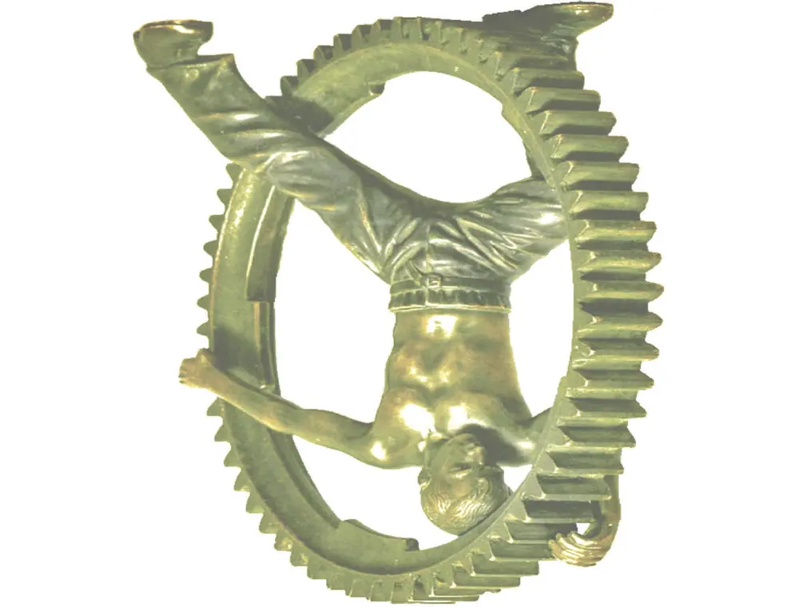

One engineering partner. Five deep capabilities.
The complete product range from the supplied M&M catalogues is now organised for fast discovery, technical review and direct enquiry.
Hydraulic Accessories
Hoses, fittings, pumps, valves, filters, gauges, power units, manifold blocks and piping accessories.
02 / CYL↗Hydraulic Cylinders
Standard, special, telescopic, tie-rod, bolted, compact, servo and rotary solutions.
03 / CNC↗Precision Engineering
CNC/VMC machined components, castings, fabrication and critical industrial spares.
04 / RMP↗Industrial Presses
Rubber compression moulding and PLC-controlled vacuum vulcanising presses.
05 / SIL↗Silicone & Rubber
Pharma tubing, sanitary fittings, gaskets, sheets, sleeves, sieves and bellows.
06 / CUSTOM↗Made to Requirement
Send a drawing, sample or application brief for an engineered, cost-effective solution.

Precision translated into production.
Application first. Quality at every stage.
Raw materials, subcontracted parts and bought-out items are inspected before in-process checks, final inspection and testing on customised rigs.
Real operating conditions, performance needs and customer expectations.
Design and material selection aligned to standards and cost effectiveness.
Static and dynamic testing against defined performance requirements.
Bring us the engineering challenge.
Share your drawing, operating pressure, material, size, quantity or machine requirement. Our team can review it and route your enquiry to the right product division.
Request a technical quote →